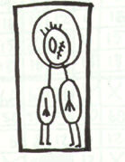
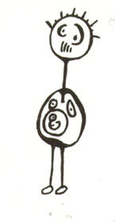

Personalisering
Just nu är det inne med personalisering av websidor. Innehållet skall anpassas till dig personligen, dvs vara unikt för dig. Problemet är dock att den "unika" content som skapas för dig är baserad på en databas, där storebror samlat information om alla som besökt sidan. Till exempel, om alla som kommit till en köpsajt från en länk på Dagens Nyheter hitintills har tittat och kanske köpt Marilyn Manson-videor, och du också kommer in till sajten från DN, är det stor chans att du inte får se mycket annat än andefattig hårdrock på sidan - och i din inbox.

Ställen som Bokus (där du handlade en julklapp till din moster) och Etoys (där du skaffade någon liten kitschig pryl till din kompis unge) kollar vad du har köpt, och tipsar dig i framtiden om att du kanske skulle vara intresserad av t ex "Stekta gröna tomater i bokform", eller miniatyrnappflaskor i fuskläder. Problemet är förstås att du kanske inte alls vill ha dessa prylar. Med andra ord, även om någon jävla idiot som har köpt samma programmeringsbok som du har beställt hela Liftarens Guide-serien i hardback så innebär det fan inte att DU vill ta i trilogin med en trettio meter lång tång! Inte ens om du får ett djävligt bra pris på halv-franskt band och en gratis oavkortad CD inläst av BBCs pojkkör.
Några kanske kommer ihåg den gamla fina sajten firefly.com. Där fick man sätta betyg på olika skivor och filmer, och sedan fick man tips om andra skivor/filmer baserat på detta. Ibland var tipsen oväntat bra, ibland helt åt skogen. Man kan misstänka att det fanns ett visst a priori-element involverat; alltså att urvalet inte bara baserades på vad andra surfare hade tyckt, utan även på hur de som gjorde sajten ansåg att olika filmer hängde ihop. (De kanske var gjorda av samma regissör, tillhörde samma genre, innehöll samma skådespelare....) Sen kunde man också leta upp andra Firefly-medlemmar som hade liknande smak och chatta med dem. Firefly kanske var ett lyckat experiment, nu har Microsoft köpt upp det, men den gamla funktionaliteten verkar vara borta.

Det största säljargumentet för "personalisering" är att det skall ge varje kund eller webbplatsbesökare en upplevelse som är skräddarsydd för henne. Man skall känna sig omhändertage, och omtyckt. "Se, vi bryr oss om dig" ...men... förutom den barnsliga teknikfascinationen ("Titta vad de kan göra nuförtiden") så klingar omtänksamheten ganska falskt. Vad det handlar om är inte att ge en unik upplevelse utan snarare att ordna in dig som en nod i en relationsdatabas, tillsammans med en lös grupp av andra som också gillar The Matrix, Underworld, MacGyver och Lenny Kravitz. Bara för att man inte genreraliserar in folk i givna fack, t ex hårdrockare, sportgoter eller skatepunkare, utan ordnar in dem i en fuzzy databas, betyder det inte att du behandlas som en unik individ, istället är du en ansiktslös konsument.
En annan, om än väldigt töntig, form av personalisering är när man får välja hur en sida ska se ut, t ex genom att välja mellan 6 olika bakgrundsfärger eller liknande lysande ideer. Detta är vanligt på patetiska s k designer-webloggar. Ibland kan det bli rätt OK om man får välja ett helt utseende som på kottke.org, men på t ex camworld eller crackbaby, oops netbabyworld så suger det bara fett..
Med hjälp av små härliga cookies så håller företagen och webloggarna reda på vem du är och vad du gör. Webben är fortfarande en riktig sideshow där det gäller att förundra publiken med billiga tricks och så länge vi går på det kan webbföretagen kamma in fett med stålar på att lura varandra och oss.
- Lisa Tottmar.
PS Jag har satt fett med cookies på dig när du läste den här sidan, några av dessa cookies är stulna från spray.se, amazon.com, boo.com m.m. + en uppsjö av porrsites och illegala spelhålor. Känn dig inte trygg DS